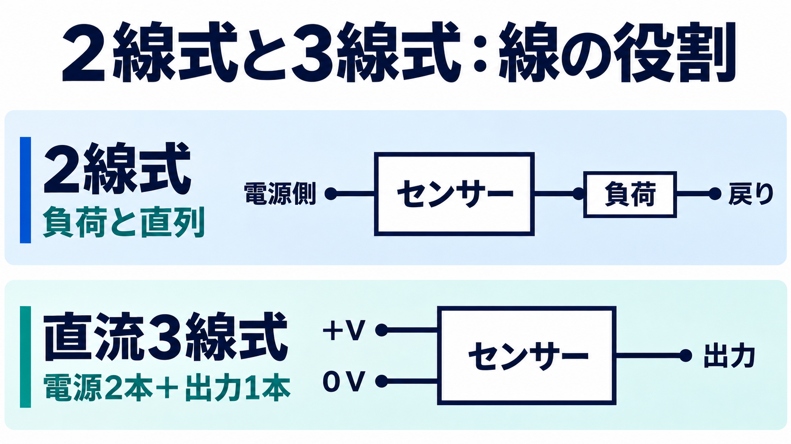
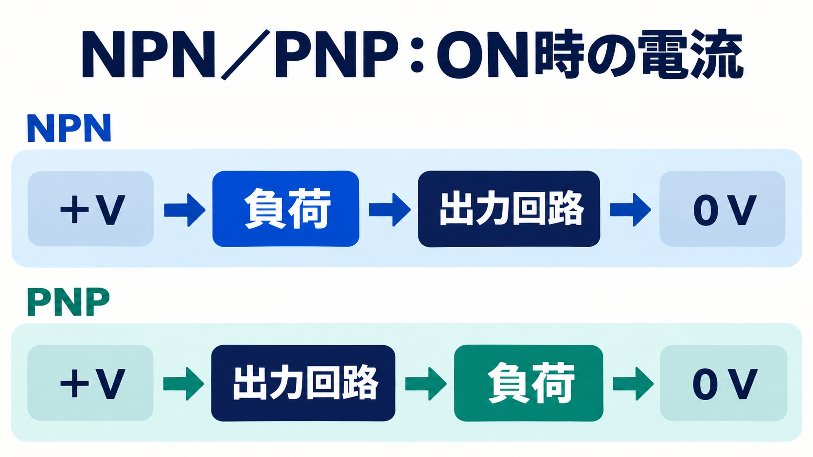
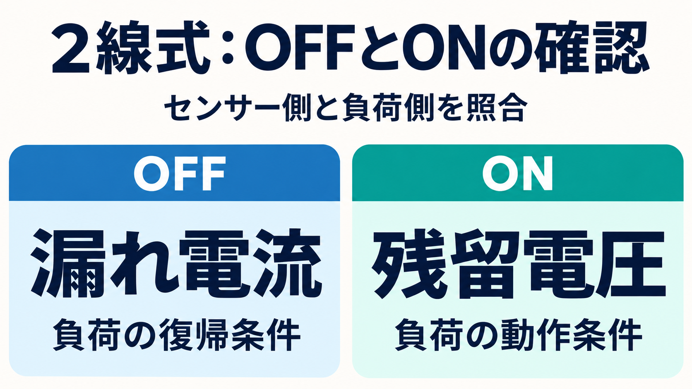

1. 先に結論：線数より、負荷と電源の関係を見る
最終内容更新：
2線式は、電子式近接センサーの代表例では、センサーと入力などの負荷が同じ電流経路に入ります。直流3線式は、電源2本とスイッチ出力1本を別に持ちます。

ここでは近接センサーのON/OFF出力を例にします。無電圧接点、4～20 mAの2線式伝送器、安全センサーには同じ説明を当てはめません。

後輩線の本数が同じなら、そのままつなげますか？
先輩本数は最初の手がかりだよ。2線式は負荷と同じ経路、3線式は電源2本と出力1本。次に型式の結線図と、PLC入力の仕様を照らし合わせよう。
2. 2線式：直流用と交流用は別物
電子式2線式の代表例は、負荷と直列で使います。OFF中も内部回路のために微小な電流が流れ、ON中はセンサー側に電圧が残ることがあります。
直流2線式
オムロン E2E-X5D1-N 2M は有極性のDC10～30 V品。極性と負荷条件は型式の資料で確認します。
交流2線式
同社 E2E-X5Y2 5M は定格AC24～240 V品。同じ2線でも、DC24 V入力へ直接つなぐ機器ではありません。
3. 直流3線式：電源2本と出力1本
代表例は電源の＋側、0 V側、出力の3本。NPN・PNPは線数の違いではなく、出力がONのときに負荷電流をどう流すかの違いです。

NPN：0 V側へ引き込む
オムロン E2E-X5C118 2M はNPN出力の例。ON時、負荷から出力へ流れる電流を0 V側へ引き込みます。
PNP：＋側から供給する
オムロン E2E-X5B1D18 2M はPNP出力の例。スイッチ出力として使う場合のON時、電源の＋側から負荷へ電流を供給します。
出力がONになる検出条件はNO／NCや設定によって異なります。線色・コネクターのピン番号を共通とみなさず、対象型式の結線図で確認します。
4. PLC入力：センサー側の出力と入力側の回路を照合
入力ユニットの型式、対象端子、入力コモンの単位を図面で確認します。「シンク／ソース」は出力側と入力側で見ている向きが違うので、呼び名だけで組み合わせを決めません。
例えば三菱電機 FX5U-32MT/ES の内蔵DC24 V入力は、シンク／ソースに対応します。これは同型式の入力仕様であり、同じPLCの名前でも増設ユニットや別機種まで共通とは限りません。
表示灯とPLCのXは別の確認点です。センサーが検出していても、PLCが信号を受けているとは限りません。
5. 2線式の照合ポイント：OFF漏れ・ON残留

OFF：漏れ電流が残る
漏れ電流が受け側のOFF保証範囲に収まるかを確認します。リレーなどでは負荷の復帰条件を確認します。
ON：負荷にかかる電圧が下がる
センサーに残る電圧の分、負荷にかかる電圧は電源電圧より小さくなります。負荷の動作電圧・入力のON保証条件と、センサーの開閉容量を確認します。
仕様の読み方の例（接続推奨ではありません）
オムロン E2E-X5D1-N 2M の漏れ電流は最大0.8 mA、開閉容量は3～100 mA、残留電圧は負荷電流100 mA・コード長2 mの条件で最大3 Vです。
三菱電機 FX5U-32MT/ES の内蔵入力は、ON感度3.5 mA以上、OFF感度1.5 mA以下。機器側の判定条件はONとOFFで別です。0.8 mAと1.5 mAの数値比較だけでは接続可とは判断できません。また、最大3 Vを別の負荷電流で一律に使って入力電圧を計算しません。
6. 図面と記録を確認する順番
- 対象を特定：センサーと入力ユニットの型式、対象端子とX番号を図面で照合。
- 方式を照合：AC／DC・電圧、2線／3線、極性、出力方式・コモン・NO／NCを確認。
- 条件を照合：2線式はOFF保証とON保証の両方、3線式は入出力の組み合わせを確認。
- 記録を比較：設備手順に従って得られた検出表示・入力表示・Xの状態を分けて照合。
7. 交換前に：線色や本数だけで置き換えない
活線作業や動作の強制は行わない
実際の配線・施工・点検は、権限を持つ担当者が設備手順に従って停止、電源遮断・再投入防止、無電圧確認を行ってから実施します。この記事は機種選定と資料照合の入口であり、実機の結線指示ではありません。
8. まとめ：型式、結線図、ON／OFFの条件
- 2線式は負荷と同じ経路。AC／DC、OFF漏れとON残留を確認。
- 直流3線式は電源と出力が別。NPN／PNPと入力回路を照合。
- 交換の判断は線色ではなく、対象型式と設備図面から。
メーカー公式資料・技術参照元
公式資料確認日：2026-11-20
- オムロン｜近接センサ 共通の注意事項：接続方式・負荷条件。
- オムロン｜E2E-X5D1-N 2M：直流2線式の極性、漏れ電流、開閉容量、残留電圧。
- オムロン｜E2E-X5Y2 5M：交流2線式の電源と負荷条件。
- オムロン｜E2E NEXT 形式・種類：直流3線式のNPN／PNPの型式の区別。
- 三菱電機｜FX5U-32MT/ES 仕様：内蔵入力の方式、ON／OFF感度。
実際に使う型式の最新資料と設備図面を優先してください。